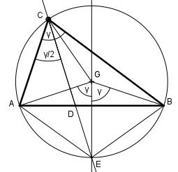
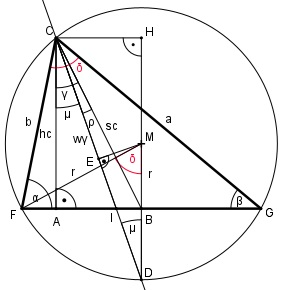

Aufgabe 148 Berechnen Sie die Seite b, wenn hc = 4 cm, wγ = 4,4 cm und sc = 5,3 cm. Vorbemerkung:

Satz: Eine Winkelhalbierende in einem Dreieck (hier wγ) schneidet sich mit der Mittelsenk- rechten der dem Winkel gegenüberliegenden Seite (hier AB) in einem Punkt des Umkreises. Beweis: Der Mittelpunktswinkel der Sehne AB sei 2 * γ. Dann ist der Umfangswinkel bei C = γ, der halbe Mittelpunktswinkel. GE ist die Mittelsenkrechte von AB, deswegen sind die beiden Sehnen AE und EB gleich lang. Der Mittelpunktswinkel über den beiden Sehnen ist γ. Der Umfangswinkel bei C über der Sehne AE ist dann = γ/2, genauso wie der Umfangswinkel bei C über der Sehne EB. Also muss CE die Winkel- halbierende wγ sein, die sich mit der Mittelsenk- rechten von c auf dem Umkreis im Punkt E trifft.
Im Dreieck ABC: hc 4 cm cos γ = ---- = -------- = 0,7547 --> γ = 41° sc 5,3 cm Im Dreieck AIC: hc 4 cm cos μ = ---- = -------- = 0,909 --> μ = 24,6° wγ 4,4 cm CH = AB Im Dreieck ABC: AB sin γ = ---- |*sc sc AB = sc * sin γ = 5,3 cm * sin 41° = = 5,3 cm * 0,6561 = 3,5 cm Im Dreieck CDH: CH sin μ = ---- |*CD CD CD * sin μ * CH |:CH CH 3,5 cm 3,5 cm CD = ------- = ----------- = -------- = 8,4 cm sin μ sin 24,6° 0,4163 Im Dreieck EDM: EM halbiert die Strecke CD: CD/2 cos μ = ------ |*r r r * cos μ = CD/2 |:cos μ CD/2 8,4/2 cm r = -------- = ------------ = 4,6 cm cos μ 0,9092 Im Dreieck AIC: AI tan μ = ---- | *hc hc AI = hc * tan μ = hc * tan 24,6° = = 4 cm * 0,4578 = 1,8 cm IB = AB - AI = 3,5 cm - 1,8 cm = 1,7 cm Im Dreieck IBD: IB tan μ = ---- |*BD BD BD * tan μ = IB |:tan μ IB IB 1,7 cm BD = ------- = ------------ = ---------- = 3,7 cm tan μ tan 24,6 ° 0,4578 MB = r – BD = 4,6 cm – 3,7 cm = 0,9 cm Im Dreieck FBM: MB 0,9 cm cos δ = ---- = ---------- = 0,1957 --> δ = 78,7° r 4,6 cm FB tan δ = ----- |*MB MB FB = c/2 = MB * tan δ = MB * tan 78,7° = = 0,9 m * 5 = 4,5 cm c = 2 * 4,5 cm = 9 cm Im Dreieck FAC: FA = FB – AB = 4,5 cm – 3,5 cm = 1 cm hc 4 cm tan α = ---- = ------- = 4 --> α = 76° FA 1 cm β = 180° - α – δ = 180° - 76° - 78,7° = 25,3° Fall WWS: Sinussatz: b c ------ = ------- |*sin β sin β sin δ c * sin β c * sin 25,3° b = ----------- = --------------- = sin δ sin 78,7° 9 cm * 0,4274 = --------------- = 3,9 cm 0,981